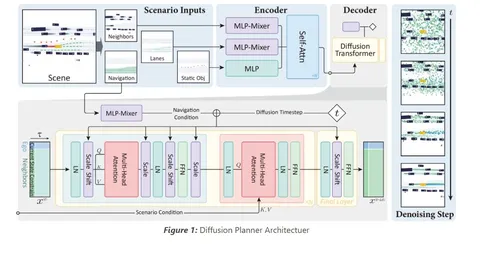

Современные learning-based подходы к планированию часто не могут сбалансировать конкурирующие цели обучения и требования к безопасности движения из-за ограниченной адаптивности и сложностей с пониманием мультимодальных форм поведения, типичных для людей. К тому же, результаты обучения находятся в зависимости от резервной стратегии с предопределёнными правилами.
Авторы сегодняшней статьи попробовали решить проблему мультимодальности, планируемой траектории и соблюдения требований безопасности переходом на диффузионный планнер. Они используют архитектуру на базе DiT, которая учится предсказывать траектории эго и агентов. Чтобы генерировать более безопасные траектории (примеры потенциалов: signed distance между эго и агентами, отклонение скорости от заданного коридора, jerk) исследователи используют classifier guidance с заранее заданными потенциалами.
Обучаются на nuPlan. При этом на довольно небольшой архитектуре получается SOTA на nuPlan среди learning-based подходов. Если же добавить refine, получается SOTA среди всех. Авторы утверждают, что в качестве refine используют готовый модуль из STR-2, который добавляет оффсеты к выходам модели и скорит траектории, используя PDM.
В diffusion-based planning используются аугментации current_state'а: исследователи заменяют положение, угол, скорость и ускорение на дельту из равномерного. Потом прибегают к quintic interpolation, чтобы перестроить GT. Данные переводят в эгоцентрическую систему координат и применяют z-score нормализацию к x-координатам и пропорционально скейлят y-координаты.
Для дополнительного сравнения команда проекта собрала собственный датасет, который состоит из 200 часов реальных данных работы автономного доставщика, которому можно ездить по велодорожкам, поэтому чаще всего он взаимодействует с пешеходами и велосипедистами. Результаты этого масштабного теста подтвердили, что Diffusion Planner обеспечивает производительность на уровне SOTA в различных стилях вождения.
Разбор подготовил
404 driver not found
